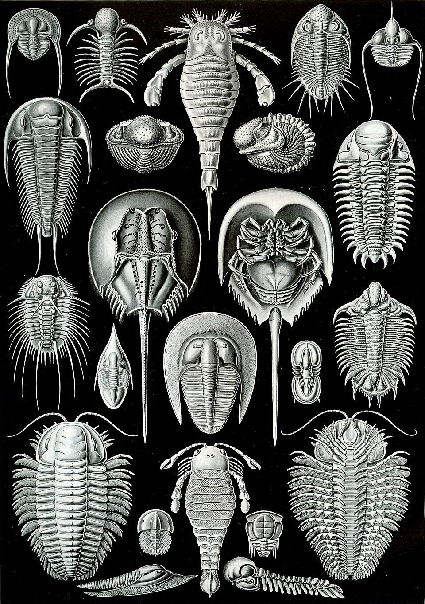

It looks the same from the shore. Go under.
Friedrich painted a guy standing over a sea of fog, and the fog is kind of the whole point. The view is gorgeous, but it's a view of the top. You never get to see what's under the mist.
Candlewood does the same thing at dusk, the surface just holds the sky. I grew up on this lake so I know that view really well. It's the underneath I want you to see.
Caspar David Friedrich, Wanderer above the Sea of Fog, c. 1818, oil on canvas, Kunsthalle Hamburg.
Native plants covering the bottom of the lake.
Eurasian milfoil, an invasive weed, starts choking the lake. Somebody has to do something.
The state stocks about 8,000 sterile grass carp to eat the milfoil.
The carp ate the native plants too. Plant cover dropped to almost nothing.
DEEP starts pulling carp out, 118 in a three day pilot. They say maybe 100 to 600 more have to go before the plants can come back.
I picked Haeckel's plate 47, Aspidonia, because it's what a full lake should look like, every inch packed with a specimen. Funny thing is those are trilobites, which we only know from fossils, so the detail is more art than observation. Here every plate is a plant the lake used to have, and you get to watch them empty out.

Black background, packed full, everything lined up. It's a picture of having a lot of stuff. So when plates start going empty you notice right away.
Keep scrolling. They empty one at a time.
Saying everybody did it is a way of saying nobody did. So here are the decisions in order, with names on them.
Connecticut Light & Power gets approval to flood the valley and store water for hydropower, and the Rocky River station finishes in 1929. So the “natural” lake was already built by people.
The first sterile grass carp go in to eat the milfoil.
More carp. About 8,000 total across the two stockings.
DEEP starts removing carp, 118 in a three day pilot, and says maybe 100 to 600 more need to come out before plants can grow back.
“I remember before the carp, the milfoil was so bad the entire cove was covered top to bottom in weeds. You literally couldn’t go swimming without getting tangled up. They were so bad they reached the surface and started budding flowers. I had no idea underwater plants could bud flowers, it was insane.”Jeff · grew up on the lake
“You used to see weeds all along the bottom by the dock. Now you can see straight to the sand, and honestly it looks cleaner, which is the weird part.”Neighbor · Candlewood Lake
“I didn’t think about it until somebody told me the plants were gone. The lake looked fine to me.”Neighbor · Candlewood Lake
“We fished that cove forever. At some point the fish just weren’t hanging around the way they used to.”Neighbor · Candlewood Lake
The carp did exactly what grass carp do, and that's the whole problem. Somebody picked it for the job and nobody could see the bottom of the lake to check.
That's me with one of the beasts, and yes it's a very unflattering picture. The pretty part is on top and the loss is underneath, and I wanted you to feel the gap between the two.
AI disclosure: the ideas, photos, research choices and quotes are mine. AI wrote the code for this site, helped with the visuals, and helped draft my artist statement from my notes and my writing style, which I then edited, as the course syllabus allows when disclosed. Jeff Solomon, GERMAN 303 / ENVIRON 304.